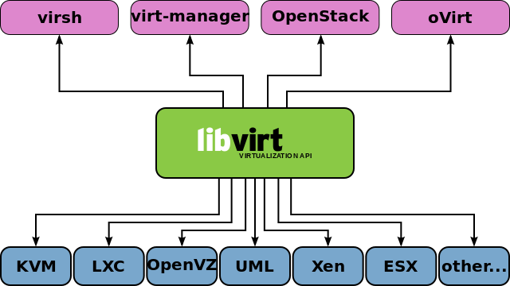

Free Updated GeoIP Databases
I found and use an up-to-date and free GeoIP databases from https://mailfud.org/geoip-legacy/ . There are 5 different GeoIP databases(also IPv6) :
Country
City
ASN
ISP
Organization
Also it has update script(geoip_update.sh). Thanks mailfud.org :)
You can test City database from here
URLs of Blacklists
Free, up-to-date and large blacklist databases for those who want to set up DNS firewall:
| Name | URL |
|---|---|
| Abuse.ch | https://threatfox.abuse.ch/ |
| Adaway | https://adaway.org/ |
| Adguard List | https://justdomains.github.io/blocklists/#the-lists |
| Blocklist.site | https://github.com/blocklistproject/Lists |
| EasyList | https://justdomains.github.io/blocklists/#the-lists |
| Easyprivacy | https://justdomains.github.io/blocklists/#the-lists |
| NoCoin List | https://justdomains.github.io/blocklists/#the-lists |
| PornTop1M List | https://github.com/chadmayfield/my-pihole-blocklists |
| Simple Ad List | https://s3.amazonaws.com/lists.disconnect.me/simple_ad.txt |
| Simple Tracker List | https://s3.amazonaws.com/lists.disconnect.me/simple_tracking.txt |
| StevenBlack/hosts | https://raw.githubusercontent.com/StevenBlack/hosts/master/hosts |
| WindowsSpyBlocker | https://github.com/crazy-max/WindowsSpyBlocker |
| YoYo List | https://pgl.yoyo.org/adservers/ |
Block ads and malware via BIND9 RPZ
Installation on Ubuntu 20.04 LTS
- Run following command to install BIND 9 on Ubuntu 20.04
$ sudo apt update $ sudo apt install bind9 bind9utils bind9-dnsutils
Configurations for recursive DNS resolver with RPZ(response policy zone)
- To enable recursion service, edit /etc/bind/named.conf.options :
// hide version number from clients for security reasons.
version "not currently available";
// optional - BIND default behavior is recursion
recursion yes;
// provide recursion service to trusted clients only
allow-recursion { 127.0.0.1; 192.168.0.0/24; 10.10.10.0/24; };
// disallow zone transfer
allow-transfer { none; };
// enable the query log
querylog yes;
//enable response policy zone.
response-policy {
zone "blocked.local";
};
- Add RPZ zone in /etc/bind/named.conf.local :
zone "blocked.local" {
type master;
file "/etc/bind/db.blocked.local";
allow-query { localhost; };
allow-transfer { localhost; };
};
- add following lines in /etc/bind/named.conf to use separate log file for RPZ(recommended):
logging {
channel blockedlog {
file "/var/log/named/blocked-zone.log" versions unlimited size 100m;
print-time yes;
print-category yes;
print-severity yes;
severity info;
};
category rpz { blockedlog; };
};
- If /var/log/named/ directory doesn't exist, create it and make bind as the owner:
$ sudo mkdir /var/log/named/
$ sudo chown bind:bind /var/log/named/ -R
Creating Zone File
- first, clone this repository:
$ git clone https://github.com/mofm/blocked-zone.git
-
If there is domain(s) you want to block, you can add it to the blacklist file.
-
execute the blocked-zone.sh script(this script downloads StevenBlack host file and then creates RPZ zone file):
$ sudo bash blocked-zone.sh
Check configurations and service:
$ sudo named-checkconf
$ sudo named-checkzone rpz /etc/bind/db.blocked.local
If no problem, restart and enable bind9 service;
$ sudo systemctl restart bind9
$ sudo systemctl enable bind9
Test:
- You can run the dig command on the BIND server to see if RPZ is working:
$ dig A adskeeper.com @127.0.0.1
- You can also check '/var/log/named/blocked-zone.log' for query log:
$ sudo tail /var/log/named/blocked-zone.log
- READY, you can add this BIND9 host IP address to your host(s).
Optional
- You can add cronjob for schedule update
- You can change the URL to StevenBlack GitHub Hosts in blocked-zone.sh
- You can download and use auto-generated RPZ zone files from https://scripttiger.github.io/alts/
- Also you can download and use abuse.ch RPZ zone file from https://urlhaus.abuse.ch/downloads/rpz/
Ingress path redirection appends port
Ingress bazi URL isteklerine container port'u ile redirect etmeye calistigi gibi bir sorunla karsilasabilirsiniz. Ornek olarak biraz daha acmak gerekirse;
$ curl -I http://cafe.example.com/coffee/ HTTP/1.1 200 OK Date: Mon, 07 Dec 2020 23:47:21 GMT Content-Type: text/html Content-Length: 87466 Connection: keep-alive Last-Modified: Mon, 07 Dec 2020 20:48:36 GMT ETag: "5fce9524-155aa" Accept-Ranges: bytes
Yukarida goruldugu "http://cafe.example.com/coffee/" adresine gonderdigimiz istek saglikli sekilde "200" kodunu cevap olarak donuyor. Birde "http://cafe.example.com/coffee" seklinde istekte bulunarak test edelim:
$ curl -I http://cafe.example.com/coffee HTTP/1.1 301 Moved Permanently Date: Sun, 07 Dec 2020 23:52:48 GMT Content-Type: text/html Content-Length: 169 Connection: keep-alive Location: http://cafe.example.com:8080/coffee
Bu ornek ise goruldugu gibi "http://hostname:cointainer_port/paths" seklinde container portunu da ekleyerek sayfayi yanlis sekilde redirect etmeye calisiyor ve sayfa ulasilamaz oluyor. Buradaki '8080' portu ingress'in arka tarafindaki nginx container'in yayin yapmakta olan portu.
Sorunun sebebine gelince, bu sorunun ingress ile hic bir alakasi yok. Hem kubernetes/ingress-nginx hem de nginxinc/nginx-ingress ingress controller'larinda nginx konfigurasyonu uzerindeki port_in_redirect degeri default olarak 'off' olarak. Fakat arka tarafta calisan nginx container uzerindeki bu konfigurasyonu 'on' yapilmissa bu durumla karsilasabilirsiniz. Bunu nginx.conf uzerinde 'port_in_redirect off;' seklinde kapatarak yasanmasini engelleyebilirsiniz.
Asagidaki sekilde nginx.conf'u configmap'e ekleyerek nginx pod'un bu configmap'i kullanmasini saglayarak deployment yapabilirsiniz.
apiVersion: v1 kind: ConfigMap metadata: name: nginx-conf data: nginx.conf: | worker_processes 1; error_log /var/log/nginx/error.log warn; pid /tmp/nginx.pid; events { worker_connections 1024; } http { proxy_temp_path /tmp/proxy_temp; client_body_temp_path /tmp/client_temp; fastcgi_temp_path /tmp/fastcgi_temp; uwsgi_temp_path /tmp/uwsgi_temp; scgi_temp_path /tmp/scgi_temp; include /etc/nginx/mime.types; default_type application/octet-stream; log_format main '$remote_addr - $remote_user [$time_local] "$request" ' '$status $body_bytes_sent "$http_referer" ' '"$http_user_agent" "$http_x_forwarded_for"'; access_log /var/log/nginx/access.log main; sendfile on; #tcp_nopush on; port_in_redirect off; keepalive_timeout 65; #gzip on; include /etc/nginx/conf.d/*.conf; } --- apiVersion: apps/v1 kind: Deployment metadata: name: coffee spec: replicas: 3 selector: matchLabels: app: coffee template: metadata: labels: app: coffee spec: containers: - name: www image: nginxinc/nginx-unprivileged ports: - containerPort: 8080 volumeMounts: - name: nginx-conf mountPath: /etc/nginx/nginx.conf subPath: nginx.conf readOnly: true --- --- apiVersion: v1 kind: Service metadata: name: coffee-svc spec: ports: - port: 80 targetPort: 8080 protocol: TCP name: http selector: app: coffee
Kubernetes, Static Website, Git
Uzun bir aradan sonra Kubernetes ile ilgili bir konu ile yazilara basliyoruz. Bu yazida Kubernetes nedir? Ne degildir? gibi Kubernetes 101'den bahsetmek yerine bir senaryo ile ilgili sizlere fikir vermek istedim. Hemen kisaca senaryodan bahsedelim:
Senaryo:
Gunumuzde insanlar blog yazilarini yayinlamak icin static websites generator'lardan(nikola, jekyll, hugo vb.) birini kullanmaya yoneliyor. Daha onceden siklikla Wordpress kullanilirken artik bu sekilde bir cozum kullanimin farkli sebepleri olabilir. Bunu simdilik irdelemeyecegim. Bu senaryomuzda yukarda bahsettigimiz sekilde olusturdugunuz static websitenizi "Kubernetes uzerine git ile nasil otomatik update edebiliriz?" cozumu hakkinda fikir verecegim. Senaryo semasinin ayrintilari asagidaki gibidir:

Senaryoyu biraz daha ayrintilandirmak gerekirse, en alt katmandan en uste dogru cikalim. Bu senaryo icin volume olarak node uzerindeki Local diski kullandim. Bu production icin uygun olmasa da test ortamini olusturmak ve iki container'in ayni volume'u kullanabilmesi icin bunu sectim.
Warning
Production ortaminda kesinlikle local disk kullanmayin! Siz production ortamlariniz icin herhangi bir Clustered File System kullanabilirsiniz.
PersistentVolume ve PersistentVolumeClaim Olusturulmasi:
Burada bir noktaya deginmek gerekirse olusturacagimiz bu volume'u nginx container'i icin sadece readonly mount ederken git-sync icin ise hem read hem de write olacak sekilde mount edecegiz. git-sync belirledigimiz git reposunu buraya sync edecektir. Bu yuzden hem read hem write yetkisi gerekirken, nginx sadece sayfalari yayinlayacagi icin read yetkisi yeterlidir.
PersistentVolume:
apiVersion: v1 kind: PersistentVolume metadata: name: my-local-pv-01 spec: capacity: storage: 1Gi accessModes: - ReadWriteOnce persistentVolumeReclaimPolicy: Delete storageClassName: my-local-storage local: path: /mnt/disk1/vol1 nodeAffinity: required: nodeSelectorTerms: - matchExpressions: - key: kubernetes.io/hostname operator: In values: - node3
Yukardaki sekilde sadece node3 hostname'li node uzerindeki '/mnt/disk1/vol1/' uzerinde 1GB buyuklugunde persistentVolume olusturduk. Yukarida da belirttigim gibi kesinlikle production ortaminda local disk kullanmayin!
$ kubectl apply -f pv.yaml
persistentVolume olusturtuktan sonra persistentVolumeClaim olusturalim.( "pv ve pvc nedir?" merak ediyorsaniz buradan )
PersistentVolumeClaim:
kind: PersistentVolumeClaim apiVersion: v1 metadata: name: my-claim-01 spec: accessModes: - ReadWriteOnce storageClassName: my-local-storage resources: requests: storage: 1Gi
$ kubectl apply -f pvc.yaml
Volume olusturdugumuza gore artik yayinlayacagimiz static websitesi icin deployment asamasina gecebiliriz.
Deployment:
Asagidaki sekilde deployment olusturalim:
apiVersion: apps/v1 kind: Deployment metadata: name: blog spec: replicas: 1 selector: matchLabels: app: blog template: metadata: labels: app: blog spec: containers: - name: git-sync image: k8s.gcr.io/git-sync/git-sync:v3.2.0 volumeMounts: - name: www-persistent-storage mountPath: /tmp/git env: - name: GIT_SYNC_REPO value: https://github.com/user_name/blog.example.com.git - name: GIT_SYNC_DEST value: "blog" - name: GIT_SYNC_WAIT value: "10" - name: www image: nginxinc/nginx-unprivileged ports: - containerPort: 8080 volumeMounts: - name: www-persistent-storage mountPath: /usr/share/nginx/html readOnly: true volumes: - name: www-persistent-storage persistentVolumeClaim: claimName: my-claim-01 nodeSelector: kubernetes.io/hostname: node3 --- apiVersion: v1 kind: Service metadata: name: blog-svc spec: ports: - port: 80 targetPort: 8080 protocol: TCP name: http selector: app: blog
git-sync environment degerlerinden GIT_SYNC_REPO yerine git reponuzu ve GIT_SYNC_DEST degerini isteginize gore degistirebilirsiniz.
$ kubectl apply -f deployment.yaml
Deployment olusturulup tamamlandiktan sonra websitemizi yayinlamak icin ingress olusturabiliriz.
apiVersion: networking.k8s.io/v1beta1 kind: Ingress metadata: name: blog-ingress spec: # ingressClassName: nginx # use only with k8s version >= 1.18.0 rules: - host: blog.example.com http: paths: - path: /blog backend: serviceName: blog-svc servicePort: 80
$ kubectl apply -f ingress.yaml
ingress tanimlamamiz da yapildigina gore http://blog.example.com/blog adresinden websitemize ulasabiliriz. Artik git uzerine sayfalarinizi push'ladiktan sonra sayfaniz otomatik guncellenecektir. Umarim size fikir vermistir.
OpenLDAP Schema for Postfix
If you configure postfix-dovecot with OpenLDAP, you will need specific LDAP's attributes. So I have written a schema.
- postfix-new.schema:
4 Attributes ( mailacceptinggeneralid, maildrop, mailEnabled, mailQuota )
1 ObjectClass ( postfixUser )
Libvirt ve OpenvSwitch
Bu yazimda libvirt ile openvswitch entegrasyonu hakkinda giris seviyesinde adim atacagiz. Kurulum ve entegrasyona gecmeden once bu iki yazilim nedir, ne degildir onlari taniyalim.
Libvirt 1 , Redhat tarafindan 2005'ten bu yana gelistirilmeye devam eden sanallastirma ortamlari icin daemon, API ve yonetim aracidir.
Libvirt bilinen bir cok hypervisor'u desteklemektedir. Iste bunlardan bazilari:
KVM
LXC
OpenVZ
Xen
User-mode Linux (UML)
Virtualbox
VMware ESX
VMware Workstation
Hyper-V
PowerVM
Parallels Workstation
Bhyve
OpenvSwitch 2 , kisaca sanal multilayer network switchtir. OpenvSwitch, bir SDN switch olarak hypervisor uzerindeki sanal makineleri fiziksel olarak ayri bulunan network switchler ile entegre calisarak yonetebilir.

Birden fazla protokolu desteklemektedir:
NetFlow
sFlow
SPAN
RSPAN
CLI
LACP
802.1ag
Kurulum:
Paket yoneticiniz ile libvirt ve openvswitch kurulumunu yapalim. Siz kendi dagitiminiza ve paket yoneticinize gore kurulumu yapabilirsiniz. Gentoo uzerinde, libvirt icin gerekli "USE FLAG"lari aktif edip kurulumunu yapalim.Binary dagitimlar icin buna gerek yoktur. Siz direk paket yoneticiniz ile kurulumu yapin.
/etc/portage/package.use/libvirt:
app-emulation/libvirt macvtap vepa qemu virt-network
Simdi kurulumu yapabiliriz.
# emerge -av libvirt
OpenvSwitch kurulumunu yapalim.
# emerge -av openvswitch
Sistem baslangici icin bu servisleri enable edelim.
# rc-update add ovsdb-server default # rc-update add ovs-vswitchd default # rc-update add libvirtd default # rc-update add libvirt-guests default
Note
openvswitch ve kvm kernel modullerinin yuklendiginden emin olunuz. Kernel uzerinde aktif etmek icin openvswitch , qemu.
Sistem acilisinda bu modullerin yuklenmesi icin
/etc/conf.d/modules:
modules_4="openvswitch kvm kvm_intel tun"
Servisleri baslatalim.
# /etc/init.d/ovsdb-server start # /etc/init.d/ovs-vswitchd start # /etc/init.d/libvirtd start # /etc/init.d/libvirt-guests start
Ansible Gentoo-Portage Update
Ansible Portage module 1 ile Gentoo Linux sisteminizi guncelleyebilir ve upgrade edebilirsiniz. Asagidaki ornekte Ilk once buildfarm adini verdigimiz sunucu uzerinde compile edilip diger gentoo sunucularimiza binary paketleri elde edip guncellemelerini yapmaktadir.
Yukarda bahsettigim sekilde bir buildfarm sunucusu yani paketlerin compile edilecegi sunucuda binary paketleri uretip diger sunuculara bu binary paketleri sunmak icin portage uzerinde "buildpkg" ozelligini aktif etmek gerekmektedir.
/etc/portage/make.conf:
FEATURES="buildpkg"
Diger Gentoo sunucularin buildfarm uzerindeki paketleri alabilmesi icin yayinlamasi gerekli. Bunun birden fazla sekilde kendinize cozum saglayabilirsiniz. FTP, FTPS, NFS, SSH, HTTP, HTTPS gibi. Biz kucuk bir web sunucusu kurup paketleri bu sekilde yayinlayalim.
# emerge -av www-servers/lighttpd
lighttpd web sunucusunu kurduktan sonra olusturulan paketlerin buradan yayinlanmasini konfigure edelim."/etc/lighttpd/lighttpd.conf" dosyasinin sonuna asagidaki iki satiri ekleyin.
/etc/lighttpd/lighttpd.conf:
server.modules += ( "mod_alias" ) alias.url = ( "/packages" => "/usr/portage/packages/" )
Artik web sunucumuzu baslatabiliriz.
# rc-update add lighttpd default # /etc/init.d/lighttpd start
Buildfarm sunucumuz ile ayarlarimiz bu kadar. Artik diger sunucularimizi buildfarm sunucusu uzerinden binary paketleri almasi icin konfigure edebiliriz.
/etc/portage/make.conf:
FEATURES="getbinpkg" PORTAGE_BINHOST="http://buildfarm.hostname/packages"
Artik ansible ile sistemizi ilk once buildfarm ile derlenip binary paketler ile diger sunucularinizi guncelleyebilirsiniz.
Ansible SSH Keys Deployment
Ansible authorized_key modulu 'delegate_to' ile sunuculara sshkey'leri deploy ederken bazi sshkey'lerin eklenmedigini gorebilirsiniz. Boyle bir sorun ile karsilasmamak icin asagidaki gibi bu module ihtiyac olmadan sshkey'leri ekleyebilirsiniz.
Nginx Reverse Proxy Cache
Bir websitesinin olmazsa olmaz unsurlardan biri performansli sekilde calismasidir. Performans ise birden fazla etkene bagli olabilir. Bu etkenler yazilan kodun kalitesinden tutun da websitenin yayinlandigi altyapiya kadar bagli olabilir. Fakat son kullanici sizin mukemmel kod kalitenize ya da sarsilmaz altyapiniza bakmaksizin kendine onune gelen performansdan memnun kalacaktir. Ayni zamanda dunyanin en iyi kodlarina yazarak cok iyi bir altyapi ile websitenizi yayina surseniz dahi kullaniciya giden iletisim surecleri belirlidir.
Bu yazida daha iyi bir performans ve hizli bir websitesi icin nginx uzerinde "content cache" hakkinda biraz bilgi vermeye calisacam. "Content Cache" kullanici ile proxy cache sunucusu arasinda saglanir. Asagidaki topolojiden inceleyebiliriz:

Yukarda topolojide goruldugu gibi 'Client I' kullanicisi, reverse proxy sunucusu arkasindaki origin sunuculara ulasmaksizin website uzerindeki iceriklere reverse proxy uzerinden ulasir. Origin sunuculardan hic bir icerik istenmez.
Konfigurasyon:
Content cache islemi nginx uzerinde basit olarak "proxy_cache_path" ve "proxy_cache" konfigurasyonlari ile ayarlanabilir. Ilk olarak "/etc/nginx/nginx.conf" dosyasi icinde "http{}" arasina "proxy_cache_path" konfigurasyonunu girelim.
proxy_cache_path /var/cache/nginx levels=1:2 keys_zone=cache:10m max_size=1g inactive=60m use_temp_path=off;
Yazdigimiz konfigurasyonu inceleyelim:
- /var/cache/nginx
-
cache icin kullanilacak dizin. Eger bu dizin olusturulmamissa olusturun ve nginx kullanicisina yazma hakkini verdiginize emin olun.
# mkdir -p /var/cache/nginx # chown nginx:nginx /var/cache/nginx
- levels=1:2
-
Nginx yukarda olusturdugumuz dizin altinda two-level directory ile cachelenen tum icerikleri tek bir dizin altinda degilde two-level dizin altinda tutmasini istiyoruz. Eger levels konfigurasyonunu yapmazsaniz nginx tum icerikleri tek bir dizin altinda toplayacak ve buyuk boyutlu cachelenen iceriklerde dosyaya erisim hizlari azalacaktir.
- keys_zone=cache:10m
-
Burada nginx cache key'ler icin shared memory zone olusturuyor. Cachelenen icerigi diske erisimi saglamadan direk olusturulan bu zone uzerinde okumasini sagliyor. "10m" ise cachelenecek olan keys buyuklugunu ayarliyoruz. 1 MB zone 8000 keys, 10MB zone 80000 keys icerebilir. Kendi cachelenecek sisteminize gore bu buyuklugu ayarlayabilirsiniz.
- max_size=1g
-
Cachelenecek maksimum buyuklugu ifade eder.
- inactive=60m
-
Cachelenmis bir icerige herhangi bir erisim olmuyorsa ne kadar sure sonra inactive olmasini ayarlar.
- use_temp_path=off
-
Nginx yukarda bahsettigimiz '/var/cache/nginx' dizinine yazmadan once gecici olarak bir dizine yazmasini ya da ikinci bir dizine yazmayi kapatmayi ayarlar. Onerilen ikinci bir yazma olmamasi icin bu ayari her zaman "off" olarak ayarlamaniz.
"proxy_cache_path" ile ilgili kismimiz bu kadar. Artik herhangi bir upstream sitemiz ile ilgili ayarlamalarimizi yapalim. Asagidaki konfigurasyonlari tekil dosya kullaniyorsaniz "/etc/nginx/nginx.conf" dosyasi icinde, ayrisik konfigurasyon kullaniyorsaniz ornek olarak "/etc/nginx/conf.d/upstream01.conf" icinde "location / {}" arasinda ayarlamaniz gerekmektedir.
Ornek olarak:
location / { proxy_cache cache; proxy_cache_valid 200 302 60m; proxy_cache_valid 404 1m; proxy_cache_revalidate on; proxy_cache_min_uses 3; proxy_cache_use_stale error timeout updating http_500 http_502 http_503 http_504; proxy_cache_background_update on; proxy_cache_lock on; add_header X-Proxy-Cache $upstream_cache_status; proxy_ignore_headers Set-Cookie; proxy_pass http://upstream01; }
Yukarda yazdigimiz konfigurasyona kisaca goz atalim.
- proxy_cache cache;
-
proxy_cache_path konfigurasyonunda olusturdugumuz shared memory zone adini belirttik.
- proxy_cache_valid 200 302 60m;
-
HTTP cevap kodu 200 ile 302 donen sayfalarin cache suresi 60 dakika olmasini belirttik.Kendi sisteminize gore konfigure edebilirsiniz.
- proxy_cache_valid 404 1m;
-
404 cevabi donen sayfalarin cache surelerini 1 dakika olarak ayarladik. Kendi sisteminize gore konfigure edebilirsiniz.
- proxy_cache_revalidate on;
-
Nginx, origin sunuculardan GET istegi gondererek icerekleri yeniler. Nginx 'If-Modified-Since' ve 'Last-Modified' cache control headerlari ekleyerek, cache kontrolunu yapar.Bir kullanici guncellenmis bir icerige istek yaparsa nginx sadece guncellenen icerigin cacheni yenileyerek performans ve band genisligininden tasarruf saglar.
- proxy_cache_min_uses 3;
-
Nginx, bir icerigin cachelenmesi icin minimum istek sayisini belirtemeniz halinde icerigi cacheleyecektir. Default olarak 1 olan istegi ben 3 yaptim. Kendi isteginize ve sisteminize gore konfigure edebilirsiniz.
- proxy_cache_use_stale error timeout updating http_500 http_502 http_503 http_504;
-
Eger origin sunuculari down olursa ya da hata verirse cachelenmis icerigi kullanicilari sunar.
- proxy_cache_background_update on;
-
Yukardaki 'stale' konfigurayonunda belirttigimiz hata aninda cachelenmis icerigi yayinlamasi icin iceriklerin backgrounddan guncellenmesi direktifini verir.
- proxy_cache_lock on;
-
Eger birden fazla kullanici ayni anda cachelenmemis bir icerige istek yollarsa sadece bir tanesinin istegi origin servera gonderilerek cachelenmesi saglanir.Diger istek ya da istekler icerik cachelenme islemi bitine kadar bekletilir.
- add_header X-Proxy-Cache $upstream_cache_status;
-
HTTP header'i icine 'X-Proxy-Cache' headerini ekler. Bu basligi eklemek daha sonra proxy cache isleminin calisip calismadigini kontrol etmek icin kullanabilirsiniz.
- proxy_ignore_headers Set-Cookie;
-
'Set-Cookie' headerinin cachelenmemesini belirttik.
Test:
Yukardaki gibi konfigurasyonlari girip nginx web sunucunuzu reload/restart ettikten sonra Proxy Cache'in calisip calismadigini test edelim.
$ curl -I http://www.example.com HTTP/1.1 200 OK Server: nginx ... X-Proxy-Cache: HIT
'X-Proxy-Cache' headeri, gonderilen istedigin gecerli oldugunu ve cevabin cache'den gonderildigi gosteriyor.
Diger Cache status cevaplari:
- MISS:
-
Gonderilen istedigin gecersiz oldugunu ve cache icinde istek gonderilen sayfanin olmadigini belirtir. Cevap origin sunucudan kullaniciya gonderilmistir.
- BYPASS:
-
Gonderilen icerik direk olarak origin sunuculardan kullaniciya gonderilmistir.
- EXPIRED:
-
Icerik cache uzerinde suresi dolmus ve origin sunucu uzerinden gonderilmis.
- STALE:
-
Origin sunucular cevap vermedigini ve icerigin cache uzerinden verildigini belirtir.
- UPDATING:
-
Icerigin stale durumda oldugunu ve bir onceki istek ile guncellemede oldugunu belirtir.
- REVALIDATED:
-
Daha once yukarida(proxy_cache konfigurasyonu kisminda) acikladigim gibi revalidated isleminde oldugunu belirtir.
Sizde yapmis oldugunuz konfigurasyonu test ederek cache durumunuzu kontrol edebilirsiniz. Kolay gelsin :)